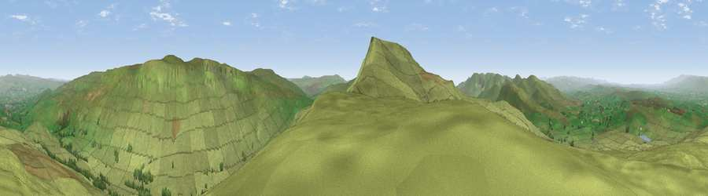

Little Fell
#3489 in England · top 6% of its area beats it · near RavenstonedaleThe view, rendered

A 360° render of this exact spot computed from the terrain model, tree cover and land cover — summer colours, afternoon light, calibrated against photographs of famous viewpoints. Real trees, hedges and buildings will differ in detail.
The panorama
Grey silhouette: terrain skyline in each direction (720 bearings, Earth curvature and refraction included). Dashed green: skyline with trees (+15 m) and buildings (+8 m) as obstacles. Blue strip: how far the ground is visible on each bearing.
Where the view opens
Wedge length = distance to the farthest visible ground on that bearing (vegetation-aware). Rings at 10, 25 and 50 km.
What fills the view
98% grassland · 1% woodland
Angular shares of the visible panorama (visual magnitude), not map area. Landscape diversity 0.04 (0–1 Shannon).
Key numbers
More beautiful places nearby
The staircase of upgrades: each row has a higher view potential than everything closer. Driving times are estimates from straight-line distance, calibrated against real road routing — check an actual route before setting out.
| Place | Direction | Drive | Score |
|---|---|---|---|
| Viewpoint c9983_7527 | S · 2 km | ~5 min | 76.3 |
| Viewpoint c10024_7603 | E · 4 km | ~8 min | 76.9 |
| Calders | WSW · 11 km | ~21 min | 79.0 |
| Calf Top | SSW · 18 km | ~32 min | 79.8 |
| Crag Hill | SSW · 19 km | ~33 min | 80.0 |
| Viewpoint near Bampton | WNW · 33 km | ~50 min | 80.4 |
| Ill Bell | W · 34 km | ~52 min | 80.9 |
| High Street (summit) | WNW · 34 km | ~52 min | 82.6 |
54.40398, -2.36095 · source: osm peak · position refined by local search. Computed location — check access rights before visiting.